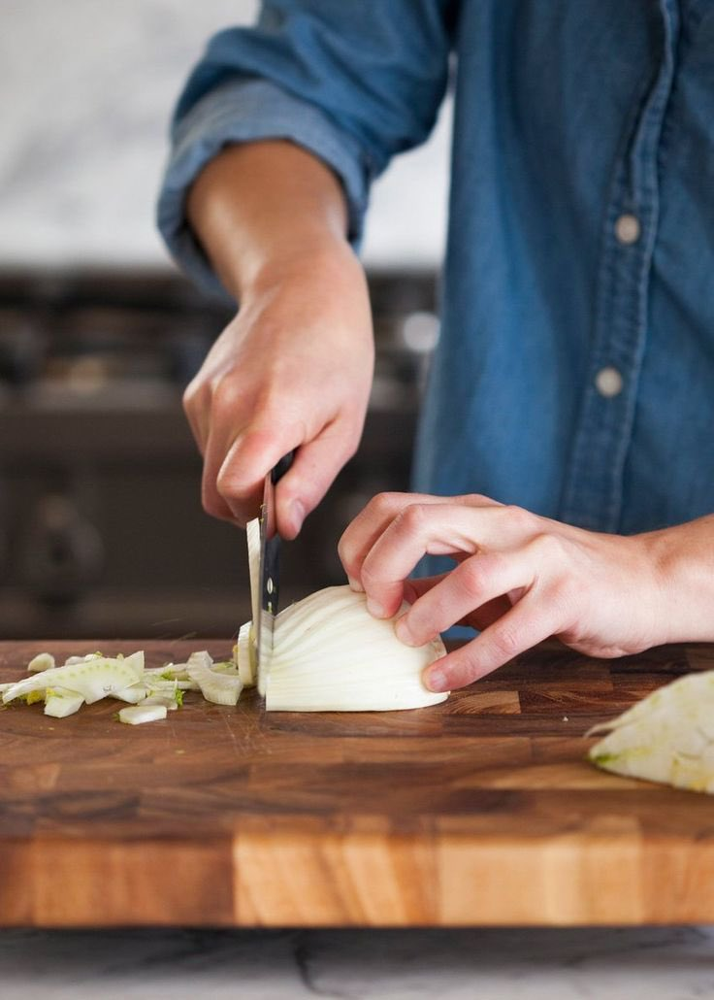
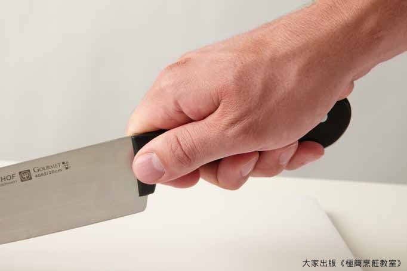

一些厨具：第一，切菜刀，主要有几种菜刀如锋利度和厚度一般的削皮水果刀，有刀身锋利轻盈，刀面较窄厚度偏薄的文刀，有刀面宽大刀身厚重，重量大的剁刀，以及各项数据平衡的万能型刀，适合轻中度使用，
新手建议买水果刀加万能刀，先从水果刀切黄瓜开始，把黄瓜拿在手上，用流水冲洗干净，再把黄瓜放在菜板上切，切的时候低头弯腰并且站稳，左手按着黄瓜并且不再移动，手尽量离远点握刀的右手，但是尺度要把控好不要让自己难受，由于握的是水果刀可以参考图1，可以多看看身边人和厨艺视频是如何握刀，将水果刀放在黄瓜偏右端的上方，刀面垂直菜板，刀锋正对黄瓜，不偏不倚不快不慢的切下去就行了，多切几根黄瓜练练手感

新手建议买水果刀加万能刀，先从水果刀切黄瓜开始，把黄瓜拿在手上，用流水冲洗干净，再把黄瓜放在菜板上切，切的时候低头弯腰并且站稳，左手按着黄瓜并且不再移动，手尽量离远点握刀的右手，但是尺度要把控好不要让自己难受，由于握的是水果刀可以参考图1，可以多看看身边人和厨艺视频是如何握刀，将水果刀放在黄瓜偏右端的上方，刀面垂直菜板，刀锋正对黄瓜，不偏不倚不快不慢的切下去就行了，多切几根黄瓜练练手感


做饭的场地
做饭肯定需要一个场地来做饭，但是不用着急觉得家里没有条件做饭
一、保持干净干爽卫生（😭）
二、厨具和厨房用品摆放整齐，防止要用时找不到，
三、室内有油烟时开窗通风，开抽油烟机等，
四、注意安全，自身的安全最重要 https://t.co/cIvbpH2wZj https://t.co/y90x3vFOW7
做饭肯定需要一个场地来做饭，但是不用着急觉得家里没有条件做饭
一、保持干净干爽卫生（😭）
二、厨具和厨房用品摆放整齐，防止要用时找不到，
三、室内有油烟时开窗通风，开抽油烟机等，
四、注意安全，自身的安全最重要 https://t.co/cIvbpH2wZj https://t.co/y90x3vFOW7